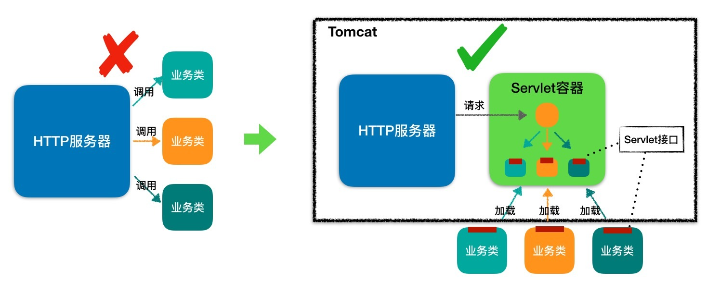
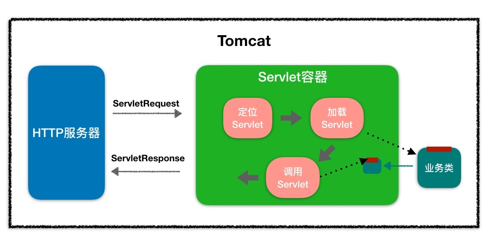

- 00 开篇词 Java程序员如何快速成长？.md
- 01 Web容器学习路径.md
- 02 HTTP协议必知必会.md
- 03 你应该知道的Servlet规范和Servlet容器.md
- 04 实战：纯手工打造和运行一个Servlet.md
- 05 Tomcat系统架构（上）： 连接器是如何设计的？.md
- 06 Tomcat系统架构（下）：聊聊多层容器的设计.md
- 07 Tomcat如何实现一键式启停？.md
- 08 Tomcat的“高层们”都负责做什么？.md
- 09 比较：Jetty架构特点之Connector组件.md
- 10 比较：Jetty架构特点之Handler组件.md
- 11 总结：从Tomcat和Jetty中提炼组件化设计规范.md
- 12 实战：优化并提高Tomcat启动速度.md
- 13 热点问题答疑（1）：如何学习源码？.md
- 14 NioEndpoint组件：Tomcat如何实现非阻塞I_O？.md
- 15 Nio2Endpoint组件：Tomcat如何实现异步I_O？.md
- 16 AprEndpoint组件：Tomcat APR提高I_O性能的秘密.md
- 17 Executor组件：Tomcat如何扩展Java线程池？.md
- 18 新特性：Tomcat如何支持WebSocket？.md
- 19 比较：Jetty的线程策略EatWhatYouKill.md
- 20 总结：Tomcat和Jetty中的对象池技术.md
- 21 总结：Tomcat和Jetty的高性能、高并发之道.md
- 22 热点问题答疑（2）：内核如何阻塞与唤醒进程？.md
- 23 Host容器：Tomcat如何实现热部署和热加载？.md
- 24 Context容器（上）：Tomcat如何打破双亲委托机制？.md
- 25 Context容器（中）：Tomcat如何隔离Web应用？.md
- 26 Context容器（下）：Tomcat如何实现Servlet规范？.md
- 27 新特性：Tomcat如何支持异步Servlet？.md
- 28 新特性：Spring Boot如何使用内嵌式的Tomcat和Jetty？.md
- 29 比较：Jetty如何实现具有上下文信息的责任链？.md
- 30 热点问题答疑（3）：Spring框架中的设计模式.md
- 31 Logger组件：Tomcat的日志框架及实战.md
- 32 Manager组件：Tomcat的Session管理机制解析.md
- 33 Cluster组件：Tomcat的集群通信原理.md
- 34 JVM GC原理及调优的基本思路.md
- 35 如何监控Tomcat的性能？.md
- 36 Tomcat I_O和线程池的并发调优.md
- 37 Tomcat内存溢出的原因分析及调优.md
- 38 Tomcat拒绝连接原因分析及网络优化.md
- 39 Tomcat进程占用CPU过高怎么办？.md
- 40 谈谈Jetty性能调优的思路.md
- 41 热点问题答疑（4）： Tomcat和Jetty有哪些不同？.md
- 特别放送 如何持续保持对学习的兴趣？.md
- 结束语 静下心来，品味经典.md
03 你应该知道的Servlet规范和Servlet容器
通过专栏上一期的学习我们知道，浏览器发给服务端的是一个HTTP格式的请求，HTTP服务器收到这个请求后，需要调用服务端程序来处理，所谓的服务端程序就是你写的Java类，一般来说不同的请求需要由不同的Java类来处理。
那么问题来了，HTTP服务器怎么知道要调用哪个Java类的哪个方法呢。最直接的做法是在HTTP服务器代码里写一大堆if else逻辑判断：如果是A请求就调X类的M1方法，如果是B请求就调Y类的M2方法。但这样做明显有问题，因为HTTP服务器的代码跟业务逻辑耦合在一起了，如果新加一个业务方法还要改HTTP服务器的代码。
那该怎么解决这个问题呢？我们知道，面向接口编程是解决耦合问题的法宝，于是有一伙人就定义了一个接口，各种业务类都必须实现这个接口，这个接口就叫Servlet接口，有时我们也把实现了Servlet接口的业务类叫作Servlet。
但是这里还有一个问题，对于特定的请求，HTTP服务器如何知道由哪个Servlet来处理呢？Servlet又是由谁来实例化呢？显然HTTP服务器不适合做这个工作，否则又和业务类耦合了。
于是，还是那伙人又发明了Servlet容器，Servlet容器用来加载和管理业务类。HTTP服务器不直接跟业务类打交道，而是把请求交给Servlet容器去处理，Servlet容器会将请求转发到具体的Servlet，如果这个Servlet还没创建，就加载并实例化这个Servlet，然后调用这个Servlet的接口方法。因此Servlet接口其实是Servlet容器跟具体业务类之间的接口。下面我们通过一张图来加深理解。

图的左边表示HTTP服务器直接调用具体业务类，它们是紧耦合的。再看图的右边，HTTP服务器不直接调用业务类，而是把请求交给容器来处理，容器通过Servlet接口调用业务类。因此Servlet接口和Servlet容器的出现，达到了HTTP服务器与业务类解耦的目的。
而Servlet接口和Servlet容器这一整套规范叫作Servlet规范。Tomcat和Jetty都按照Servlet规范的要求实现了Servlet容器，同时它们也具有HTTP服务器的功能。作为Java程序员，如果我们要实现新的业务功能，只需要实现一个Servlet，并把它注册到Tomcat（Servlet容器）中，剩下的事情就由Tomcat帮我们处理了。
接下来我们来看看Servlet接口具体是怎么定义的，以及Servlet规范又有哪些要重点关注的地方呢？
Servlet接口
Servlet接口定义了下面五个方法：
public interface Servlet {
void init(ServletConfig config) throws ServletException;
ServletConfig getServletConfig();
void service(ServletRequest req, ServletResponse res）throws ServletException, IOException;
String getServletInfo();
void destroy();
}
其中最重要是的service方法，具体业务类在这个方法里实现处理逻辑。这个方法有两个参数：ServletRequest和ServletResponse。ServletRequest用来封装请求信息，ServletResponse用来封装响应信息，因此本质上这两个类是对通信协议的封装。
比如HTTP协议中的请求和响应就是对应了HttpServletRequest和HttpServletResponse这两个类。你可以通过HttpServletRequest来获取所有请求相关的信息，包括请求路径、Cookie、HTTP头、请求参数等。此外，我在专栏上一期提到过，我们还可以通过HttpServletRequest来创建和获取Session。而HttpServletResponse是用来封装HTTP响应的。
你可以看到接口中还有两个跟生命周期有关的方法init和destroy，这是一个比较贴心的设计，Servlet容器在加载Servlet类的时候会调用init方法，在卸载的时候会调用destroy方法。我们可能会在init方法里初始化一些资源，并在destroy方法里释放这些资源，比如Spring MVC中的DispatcherServlet，就是在init方法里创建了自己的Spring容器。
你还会注意到ServletConfig这个类，ServletConfig的作用就是封装Servlet的初始化参数。你可以在web.xml给Servlet配置参数，并在程序里通过getServletConfig方法拿到这些参数。
我们知道，有接口一般就有抽象类，抽象类用来实现接口和封装通用的逻辑，因此Servlet规范提供了GenericServlet抽象类，我们可以通过扩展它来实现Servlet。虽然Servlet规范并不在乎通信协议是什么，但是大多数的Servlet都是在HTTP环境中处理的，因此Servet规范还提供了HttpServlet来继承GenericServlet，并且加入了HTTP特性。这样我们通过继承HttpServlet类来实现自己的Servlet，只需要重写两个方法：doGet和doPost。
Servlet容器
我在前面提到，为了解耦，HTTP服务器不直接调用Servlet，而是把请求交给Servlet容器来处理，那Servlet容器又是怎么工作的呢？接下来我会介绍Servlet容器大体的工作流程，一起来聊聊我们非常关心的两个话题：Web应用的目录格式是什么样的，以及我该怎样扩展和定制化Servlet容器的功能。
工作流程
当客户请求某个资源时，HTTP服务器会用一个ServletRequest对象把客户的请求信息封装起来，然后调用Servlet容器的service方法，Servlet容器拿到请求后，根据请求的URL和Servlet的映射关系，找到相应的Servlet，如果Servlet还没有被加载，就用反射机制创建这个Servlet，并调用Servlet的init方法来完成初始化，接着调用Servlet的service方法来处理请求，把ServletResponse对象返回给HTTP服务器，HTTP服务器会把响应发送给客户端。同样我通过一张图来帮助你理解。

Web应用
Servlet容器会实例化和调用Servlet，那Servlet是怎么注册到Servlet容器中的呢？一般来说，我们是以Web应用程序的方式来部署Servlet的，而根据Servlet规范，Web应用程序有一定的目录结构，在这个目录下分别放置了Servlet的类文件、配置文件以及静态资源，Servlet容器通过读取配置文件，就能找到并加载Servlet。Web应用的目录结构大概是下面这样的：
| - MyWebApp
| - WEB-INF/web.xml -- 配置文件，用来配置Servlet等
| - WEB-INF/lib/ -- 存放Web应用所需各种JAR包
| - WEB-INF/classes/ -- 存放你的应用类，比如Servlet类
| - META-INF/ -- 目录存放工程的一些信息
Servlet规范里定义了ServletContext这个接口来对应一个Web应用。Web应用部署好后，Servlet容器在启动时会加载Web应用，并为每个Web应用创建唯一的ServletContext对象。你可以把ServletContext看成是一个全局对象，一个Web应用可能有多个Servlet，这些Servlet可以通过全局的ServletContext来共享数据，这些数据包括Web应用的初始化参数、Web应用目录下的文件资源等。由于ServletContext持有所有Servlet实例，你还可以通过它来实现Servlet请求的转发。
扩展机制
不知道你有没有发现，引入了Servlet规范后，你不需要关心Socket网络通信、不需要关心HTTP协议，也不需要关心你的业务类是如何被实例化和调用的，因为这些都被Servlet规范标准化了，你只要关心怎么实现的你的业务逻辑。这对于程序员来说是件好事，但也有不方便的一面。所谓规范就是说大家都要遵守，就会千篇一律，但是如果这个规范不能满足你的业务的个性化需求，就有问题了，因此设计一个规范或者一个中间件，要充分考虑到可扩展性。Servlet规范提供了两种扩展机制：Filter和Listener。
Filter是过滤器，这个接口允许你对请求和响应做一些统一的定制化处理，比如你可以根据请求的频率来限制访问，或者根据国家地区的不同来修改响应内容。过滤器的工作原理是这样的：Web应用部署完成后，Servlet容器需要实例化Filter并把Filter链接成一个FilterChain。当请求进来时，获取第一个Filter并调用doFilter方法，doFilter方法负责调用这个FilterChain中的下一个Filter。
Listener是监听器，这是另一种扩展机制。当Web应用在Servlet容器中运行时，Servlet容器内部会不断的发生各种事件，如Web应用的启动和停止、用户请求到达等。 Servlet容器提供了一些默认的监听器来监听这些事件，当事件发生时，Servlet容器会负责调用监听器的方法。当然，你可以定义自己的监听器去监听你感兴趣的事件，将监听器配置在web.xml中。比如Spring就实现了自己的监听器，来监听ServletContext的启动事件，目的是当Servlet容器启动时，创建并初始化全局的Spring容器。
到这里相信你对Servlet容器的工作原理有了深入的了解，只有理解了这些原理，我们才能更好的理解Tomcat和Jetty，因为它们都是Servlet容器的具体实现。后面我还会详细谈到Tomcat和Jetty是如何设计和实现Servlet容器的，虽然它们的实现方法各有特点，但是都遵守了Servlet规范，因此你的Web应用可以在这两个Servlet容器中方便的切换。
本期精华
今天我们学习了什么是Servlet，回顾一下，Servlet本质上是一个接口，实现了Servlet接口的业务类也叫Servlet。Servlet接口其实是Servlet容器跟具体Servlet业务类之间的接口。Servlet接口跟Servlet容器这一整套规范叫作Servlet规范，而Servlet规范使得程序员可以专注业务逻辑的开发，同时Servlet规范也给开发者提供了扩展的机制Filter和Listener。
最后我给你总结一下Filter和Listener的本质区别：
Filter是干预过程的，它是过程的一部分，是基于过程行为的。
Listener是基于状态的，任何行为改变同一个状态，触发的事件是一致的。
课后思考
Servlet容器与Spring容器有什么关系？
不知道今天的内容你消化得如何？如果还有疑问，请大胆的在留言区提问，也欢迎你把你的课后思考和心得记录下来，与我和其他同学一起讨论。如果你觉得今天有所收获，欢迎你把它分享给你的朋友。
© 2019 - 2023 Liangliang Lee. Powered by gin and hexo-theme-book.